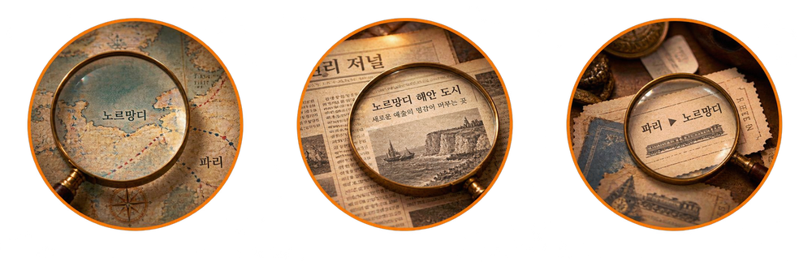

Step 1 · 현장 체험
체험존 자유롭게 관람
시안 이미지
산업혁명 시대를 재현한 공간 내 전시물 및 오브제 자유 관람
이 단계는 부스 현장에서 진행되며 앱 조작이 없습니다.
다음
Step 2 · 현장 체험
다음 목적지 단서 발견

시안 이미지
벽면 지도, 신문, 책상 위 소품 등에서 다음 목적지에 대한 힌트 탐색
이 단계는 부스 현장에서 진행되며 앱 조작이 없습니다.
앱 퀴즈 참여하기
INDUSTRIAL REVOLUTION
4/8
단서를 바탕으로
다음 목적지로 가는 노선을 선택하세요.
노선 자동 연결
 시안 이미지시안 이미지
시안 이미지시안 이미지